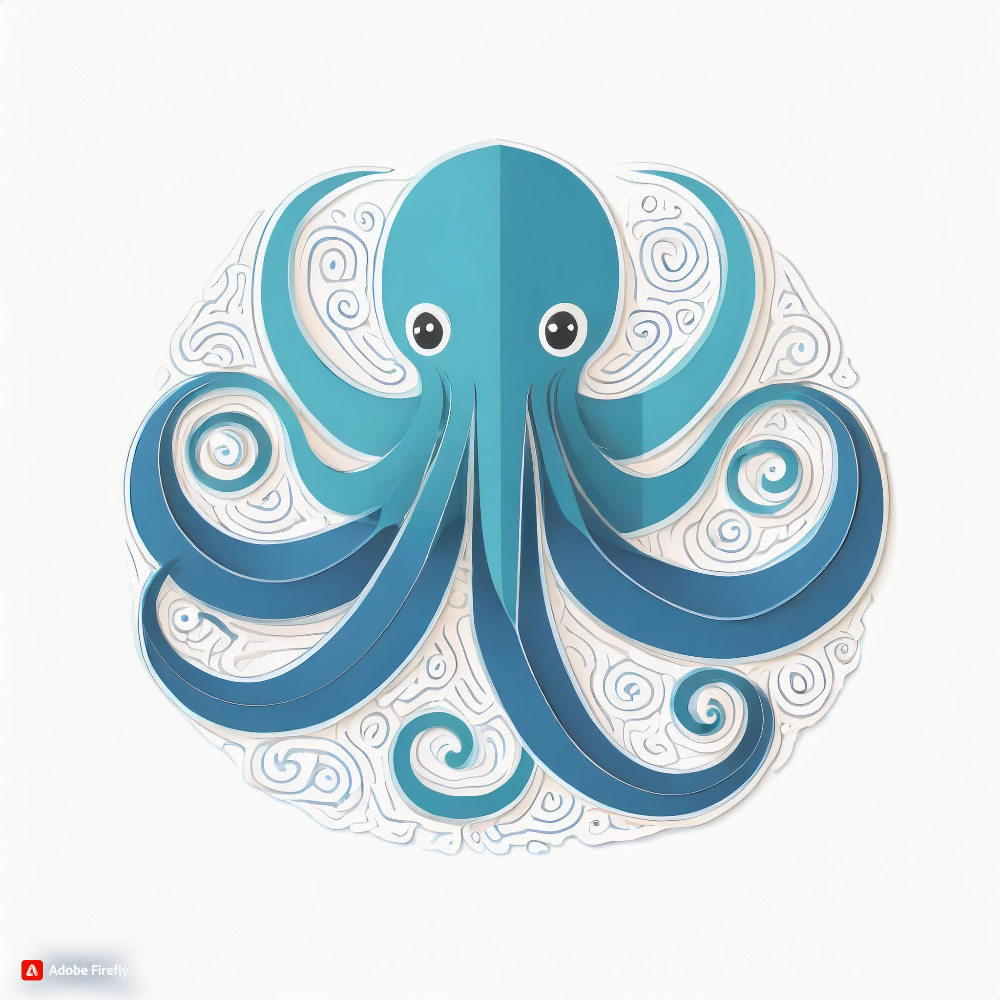
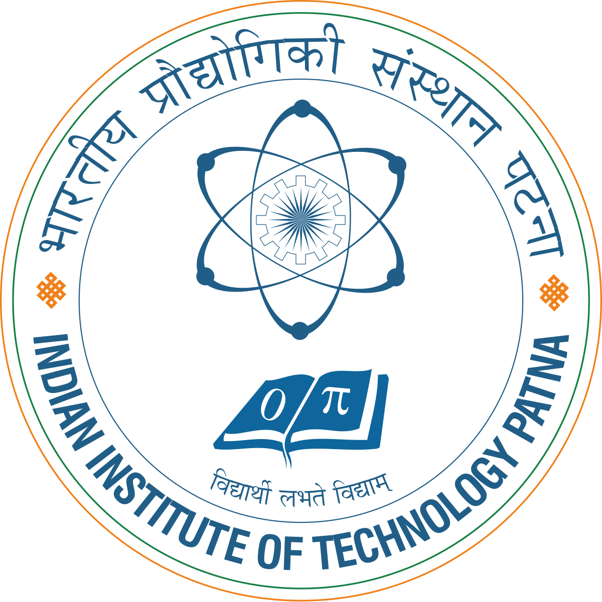

Experience

Project Researcher
Neuro-Symbolic Computing Research Lab, University of Georgia
August 2024 - May 2025
- Built an interactive web dashboard to visualize time-series forecasts with dynamic model selection and timelines.
- Integrated deep learning models (PatchTST, GRU, NLinear) into a modular backend for real-time predictions.
- Automated CI/CD deployment using GitHub Actions and hosted the app on Render with Docker.
Student Research Assistant
UGA CAES-Agriculture, Leadership, Edu & Communication
March 2024 - May 2024
- Conducted data processing and statistical analyses under Dr. Peng Lu's guidance.
- Applied machine learning techniques, enhancing sentiment analysis and topic modeling accuracy by 80% on large datasets.
- Assisted in preparing results for manuscripts and collaborating on research publications.
Machine Learning Intern
Test AIng Solutions (AiEnsured.com)
January 2023 - April 2023
- Enhanced image pipeline activities, improving model explainability by 20% using advanced techniques.
- Collaborated on live video feed monitoring using an object detection model, reducing false detections by 15% and increasing overall detection accuracy by 70%.
- Increased object detection model robustness, resulting in a 40% improvement in detection accuracy.

Research Intern
Indian Institute of Technology Patna
June 2022 - July 2022
- Analyzed disaster tweets with unsupervised methods, achieving a 10% increase in information extraction accuracy using VEC.